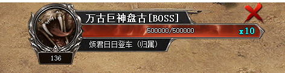
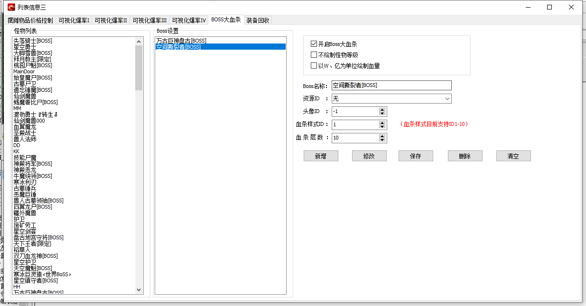

BOSS大血条  
1、BOSS大血条的素材读取的是必备补丁下的750-970.
官方提供了3套素材底图，UI编辑器上也可以自由设置自己的血条UI。
2、M2-BOSS血条里面设置的怪物大血条都可以自由设置怪物头像，血条样式ID指的是UI编辑器里面血条样式序号
3、血条层数指的是怪物血条显示的层数。比如怪物血量80万，设置为10层，那么会在血条上显示一个"X10"字样
表示血条有10层，每一层8万血，每层血条会按照UI的顺序变换颜色及特效。
4、修改完BOSS大血条的设置以后一定要加载一下怪物数据，否则修改不会立即生效。